지적기사 (2019-03-03 기출문제)
1과목: 지적측량
1. 지적도근점측량의 배각법에서 종횡선 오차는 어느 방법으로 배분하여야 하는가?
- 반수에 비례하여 배분한다.
- 콤파스 법칙에 의해 배분한다.
- 트랜싯 법칙에 의해 배분한다.
- 측정변의 기이에 반비례하여 배분한다.
(정답률: 68%)

2. 6개의 삼각형으로 구성된 유심 다각망에서 중심각오차(e)가 –10.6″ 각 삼각형의 내각오차의 합(Σε)이 +20.8″ 일 때에 각 삼각형의 r각의 보정치(Ⅱ)는?
- +3.6″
- +3.8″
- +4.0″
- +4.4″
(정답률: 34%)
3. A점에서 트랜싯으로 B점을 시준한 결과, 표척눈금이 5.20m, 기계고가 3.70m, AB의 경사거리가 45m이었다면, AB 두 지점의 수평거리는?
- 44.67m
- 44.70m
- 44.85m
- 44.97m
(정답률: 58%)
4. 면적측정의 방법과 관련한 아래 내용의 ㉠과 ㉡에 들어갈 알맞은 말은?
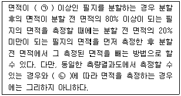
- ㉠ : 3000m2, ㉡ : 전자면적측정법
- ㉠ : 3000m2, ㉡ : 좌표면적측정법
- ㉠ : 5000m2, ㉡ : 전자면적측정법
- ㉠ : 5000m2, ㉡ : 좌표면적측정법
(정답률: 55%)
5. 전파기 또는 광파기측량벙법에 따른 지적삼각점의 점간거리는 몇 회 측정하여야 하는가?
- 2회
- 3회
- 4회
- 5회
(정답률: 51%)
6. 경위의측량방법으로 세부측량을 한 경우 측량결과도에 작성하여야 할 사항이 아닌 것은?
- 측정점의 위치 측량기하적
- 측량결과도의 제명 및 번호
- 측량대상 토지의 점유현황선
- 측량대상 토지의 경계점 간 실측거리
(정답률: 57%)
7. 동일조건으로 거리를 측량한 결과가 다음과 같을 때, 최확치로 옳은 것은?
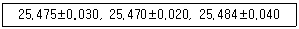
- 25.471
- 25.473
- 25.475
- 25.483
(정답률: 40%)
8. 지적도면의 작성에 대한 설명으로 옳은 것은?
- 경계점 간 거리는 2mm 크기의 아라비아숫자로 제도한다.
- 도곽선의 수치는 2mm 크기의 아라비아숫자로 제도한다.
- 도면에 동록하는 지번은 5mm 크기의 고딕체로 한다.
- 삼각점 및 지적기준점은 0.5mm 폭의 선으로 제도한다.
(정답률: 60%)
9. 경위의측량방법과 전파기측량방법에 따라 교회법으로 지적삼각보조점측량을 하는 기준으로 옳지 않은 것은?
- 수평각 관측은 2대회의 방향관측법에 의한다.
- 삼각형의 각 내각은 30° 이상 120° 이하로 한다.
- 2방향의 교회에 의하여 결정하려는 경우, 각 내각의 관측치의 합계와 180°와의 차가 ±50초 이내이어야 한다.
- 지적삼각보조점표지의 점간거리는 평균 1km이상 3km 이하로 한다. 단, 다각망도선법에 따르는 경우는 제외한다.
(정답률: 65%)
10. 산100임을 산지전용하여 대지로 조성하는 경우 지적공부에 등록하기 위한 측량으로 옳은 것은?
- 등록말소
- 등록전환
- 신규등록
- 축척변경
(정답률: 83%)
11. 지적삼각점성과를 관리할 때 지적삼각점성과표에 기록⋅관리하여야 할 사항이 아닌 것은?
- 설치기관
- 자오선수차
- 좌표 및 표고
- 지적삼각점의 명칭
(정답률: 63%)
12. 방위각 271° 30′ 의 방위각은?
- N 89° 30′ E
- N 1° 30′ W
- N 88° 30′ W
- N 90° W
(정답률: 84%)
13. 광파기측량방법에 따라 다각망도선법으로 지적삼각보조점측량을 할 때 1도선의 거리 기준으로 옳은 것은?
- 1 km 이하
- 2 km 이하
- 3 km 이하
- 4 km 이하
(정답률: 76%)
14. 다각망도선법에 따르는 경우, 지적도근점표지의 점간거리는 평균 몇 m 이하로 하여야 하는가?
- 500m
- 1000m
- 2000m
- 3000m
(정답률: 82%)
15. 트렌싯 법칙에 대한 설명으로 가장 옳은 것은?
- 변의 수에 비례하여 오차를 배분하는 방식이다.
- 측선장에 반비례하여 오차를 배분하는 방식이다.
- 거리측정의 정밀도가 각 관측의 정밀도에 비하여 높다.
- 각 관측의 정밀도가 거리측정의 정밀도에 비하여 높다.
(정답률: 41%)
16. 두 점 간의 거리가 222m이고 두 점간의 방위각이 33° 33′ 33″ 일 때 횡선차는?
- 122.72m
- 145.26m
- 185.00m
- 201.56m
(정답률: 55%)
17. 경계점좌표등록부를 갖춰 두는 지역의 측량에 대한 설명으로 옳은 것은?
- 경계점좌표등록부를 갖춰 두는 지역에 있는 각 필지의 경계점을 측정할 때에는 도선법 또는 원호법에 따라 좌표를 산출하여야 한다.
- 경계점좌표등록부를 갖춰 두는 지역에 있는 각 필지의 경계점 측점번호는 오른쪽 위에서부터 왼쪽으로 경계를 따라 일련번호를 부여한다.
- 기존의 경계점좌표등록부를 갖춰 두는 지역의 경계점에 접속하여 지적확정측량을 하는 경우 동일한 경계점의 측량성과의 차이는 0.10m이내여야 한다.
- 기존의 경계점좌표등록부를 갖춰 두는 지역의 경계점에 접속하여 지적확정측량을 하는 경우 동일한 경계점의 측량성과가 서로 다를 때에는 새로이 측량한 성과를 좌표로 결정한다.
(정답률: 64%)
18. 다음 중 온도에 따른 줄자의 신축을 팽창계수에 따라 보정한 오차의 조정과 관련이 있는 것은?
- 착오
- 과대오차
- 계통오차
- 우연오차
(정답률: 61%)
19. 두 점 A, D 사이의 거리를 AB, BC, CD의 3구간으로 나누어 측정한 결과 아래 표와 같은 값을 얻었다면, AD 사이 전체길이와 표준편차는?
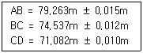
- 224.882m ± 0.020m
- 224.882m ± 0.022m
- 224.882m ± 0.026m
- 224.822m ± 0.030m
(정답률: 49%)
20. 경위의 측량방법으로 세부측량을 실시할 때 측량대상 토지의 경계점 간 실측거리와 경계점의 좌표에 따라 계산한 거리의 교차는 얼마 이내여야 하는가? (단, L은 실측거리로서 미터단위로 표시한 수치이다.)
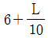
센티미터 이내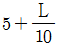
센티미터 이내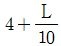
센티미터 이내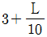
센티미터 이내
(정답률: 83%)
2과목: 응용측량
21. 곡선설치에서 캔트(cant)의 의미는?
- 확폭
- 편경사
- 종곡선
- 매개변수
(정답률: 67%)
22. GNSS 측량을 위하여 어느 곳에서나 같은 시간대에 관측할 수 있어야 하는 위성의 최소 개수는?
- 2개
- 4개
- 6개
- 8개
(정답률: 73%)
23. 수준측량에서 표척(수준척)을 세우는 횟수를 짝수로 하는 주된 이유는?
- 표척의 영점오차 소거
- 시준축에 의한 오차의 소거
- 구차의 소거
- 기차의 소거
(정답률: 60%)
24. 입체시에 의한 과고감에 대한 설명으로 옳은 것은?
- 사진의 초점거리와 비례한다.
- 사진 촬영의 기선 고도비에 비례한다.
- 입체시할 경우 눈의 위치가 높아짐에 따라 작아진다.
- 렌즈 피사각의 크기와 반비례한다.
(정답률: 64%)
25. 그림과 같이 경사지에 폭 6.0m의 도로를 만들고자 한다. 절토 기울기 1:0.7, 절토고 2.0m, 성토기울기 1:1, 성토고 5.0m일 때 필요한 용지폭(x1+x2)은? (단, 여유폭 a는 1.50m로 한다.)
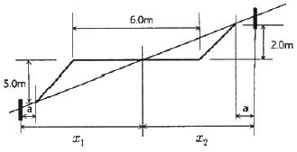
- 16.9m
- 15.4m
- 11.8m
- 7.9m
(정답률: 57%)
26. 터널 내 두 점의 좌표(X, Y, Z)가 각각 A(1328.0m, 810.0m, 86.3m), B(1734.0m, 589.0m, 112.4m)일 때, A, B를 연결하는 터널의 경사거리는?
- 341.52m
- 341.98m
- 462.25m
- 462.99m
(정답률: 59%)
27. 회전주기가 일정한 인공위성에 의한 원격탐사의 특성이 아닌 것은?
- 얻어진 영상이 전사투영에 가깝다.
- 판독이 자동적이고 정량화가 가능하다.
- 넓은 지역을 동시에 측정할 수 있다.
- 어떤 지점이든 원하는 시기에 관측할 수 있다.
(정답률: 74%)
28. 평판을 이용하여 측량한 겨로가 경사분획(n)이 10, 수평거리(D)가 50m, 표척의 읽은 값(ℓ) 이 1.50m, 기계고(I)가 1.0m 기계를 세운 점의 지반고(HA)가 20m인 경우 표척을 세운 지점의 지반고는?
- 21.1m
- 21.6m
- 22.7m
- 24.5m
(정답률: 31%)
29. 거리 80m 떨어진 곳에 표척을 세워 기포가 중앙에 있을 때와 기포관의 눈금이 5눈금 이동했을 때 표척 읽음 값의 차이가 0.09m이었다면 이 기포관의 곡률반지름은? (단, 기포관 한눈금의 간격은 2mm이고, ρ″=206265″ 이다.)
- 8.9m
- 9.1m
- 9.4m
- 9.6m
(정답률: 30%)
30. 지형도의 이용과 가장 거리가 먼 것은?
- 도로, 철도, 수로 등의 도상 선정
- 종단면도 몇 횡단면도의 작성
- 간접적인 지적도 작성
- 집수면적의 측정
(정답률: 50%)
31. 터널측량에 대한 설명 중 옳지 않은 것은?
- 터널측량은 크게 터널 내 측량, 터널 외 측량, 터널 내외 연결측량으로 구분할 수 있다.
- 터널 내 측량에서는 망원경의 십자선 및 표척에 조명이 필요하다.
- 터널의 길이방향은 주로 트래버스측량으로 행한다.
- 터널 내의 곡선설치는 일반적으로 기상에서와 같이 편각법을 주로 사용한다.
(정답률: 76%)
32. 짧은 선의 간격, 굵기 길이 및 방향 등으로 지표의 기복을 나타내는 지형 표시 방법은?
- 영선법
- 등고선법
- 점고법
- 채색법
(정답률: 77%)
33. 노선의 중심점간 길이가 20m이고 단곡선의 반지름 R=100m일 때 중심점간 길이(20m)에 대한 편각은?
- 5° 40´
- 5° 20´
- 5° 44´
- 5° 54´
(정답률: 61%)
34. 지형도에서 92m 등고선 상의 A점과 118m 등고선 상의 B점 사이에 일정한 기울기 8%의 도로를 만들었을 때, AB 사이 도로의 실제 경사거리는?
- 347m
- 339m
- 332m
- 326m
(정답률: 53%)
35. 30km×20km의 토지를 사진 크기 18cm×18cm, 초점거리 150mm, 종중복도 60%, 횡중복도 30%, 축척 1:30000로 촬영할 때, 필요한 총 모델수는? (단, 안전율은 고려하지 않는다.)
- 65 모델
- 74 모델
- 84 모델
- 98 모델
(정답률: 48%)
36. 그림과 같은 지역에 정지작업을 하였을 때, 절토량과 성토량이 같게 되는 지반고는? (단, 각 구역의 면적은 16m2으로 동일하고, 지반고 단위는 m 이다.)
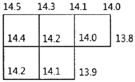
- 13.78m
- 14.09m
- 14.15m
- 14.23m
(정답률: 54%)
37. GPS 신호에서 P코드의 1/10 주파수를 가지는 C/A코드의 파장 크기로 옳은 것은?
- 100m
- 200m
- 300m
- 400m
(정답률: 60%)
38. 항공사진을 촬영하기 위한 비행고도가 3000m일 때, 평지에 있는 200m 높이의 언덕에 대한 사진 상최대 기복변위는? (단, 항공사진 1장의 크기는 23cm×23cm이다.)
- 7.67mm
- 10.84mm
- 15.33mm
- 21.68mm
(정답률: 56%)
39. GPS 위성의 궤도 주기로 옳은 것은?
- 약 6시간
- 약 10시간
- 약 12시간
- 약 18시간
(정답률: 78%)
40. 곡선설치법에서 원곡선의 종류가 아닌 것은?
- 렘니스케이트
- 복심곡선
- 반향곡선
- 단곡선
(정답률: 73%)
3과목: 토지정보체계론
41. 주요 DBMS에서 채택하고 있는 표준 데이터베이스 질의어는?
- SQL
- COBOL
- DIGEST
- DELPHI
(정답률: 80%)
42. 데이터베이스에서 데이터 표준 유형을 분류할 때 기능측면의 분류에 해당하지 않는 것은?
- 기술 표준
- 데이터 표준
- 프로세스 표준
- 메타데이터 표준
(정답률: 61%)
43. Wed GIS에 대한 설명으로 옳지 않은 것은?
- 클라이언트-서버 형태의 시스템으로 대용량 공간 자료의 저장, 관리와 분산처리가 가능하다.
- 전문적인 GIS 개발자들이 특정 목적의 GIS응용 프로그램을 개발할 수 있도록 하는 개발지원도구이다.
- 인터넷 기술을 GIS와 접목시켜 네트워크 환경에서 GIS 서비스를 제공할 수 있도록 구축한 시스템이다.
- 데이터베이스와 웹의 상호 연결로 시공간상의 한계를 극복하고 실시간으로 정보 취득과 공유가 가능하다.
(정답률: 63%)
44. 토탈스테이션과 지적측량 운영프로그램 등이 설치된 컴퓨터를 연결하여 세부측량을 수행함으로써 필지 경계 정보를 취득하는 측량 방법은?
- GNSS
- 경위의측량
- 전자평판측량
- 네트워크 RTK측량
(정답률: 55%)
45. 다음 중 지적 관련 속성정보를 데이터베이스에 입력하기에 가장 적합한 장비는?
- 스캐너
- 플로터
- 키보드
- 디지타이저
(정답률: 72%)
46. 나무줄기와 같은 구조를 가지고 있으며, 가장 상위의 계층을 뿌리라 할 때 뿌리를 제외한 모든 객체들은 부모-자녀의 관례를 갖는 데이터 모델은?
- 관계형 데이터 모델
- 계층형 데이터 모델
- 객체지향형 데이터 모델
- 네트워크형 데이터 모델
(정답률: 68%)
47. 다음 중 공간자료의 파일형식이 다른 것은?
- BIL
- DGN
- DWG
- SHP
(정답률: 53%)
48. 지적도 전산화 작업의 목적으로 옳지 않은 것은?
- 정확한 지적측량자료의 이용
- 지적도의 대량 생산 및 배포
- 대민서비스의 질적 수준 향상
- 지적도 원형 보관⋅관리의 어려움 해소
(정답률: 74%)
49. 토지대장의 고유번호 중 행정구역코드를 구성하는 자리 수 기준으로 옳지 않은 것은?
- 리 - 3자리
- 시⋅도 - 2자리
- 시⋅군⋅구 - 3자리
- 읍⋅면⋅동 – 3자리
(정답률: 75%)
50. PBLIS와 NGIS의 연계로 나타나는 장점으로 가장 거리가 먼 것은?
- 토지관련 자료의 원활한 교류와 공동활용
- 토지의 효율적인 이용 증진과 체계적 국토개발
- 유사한 정보시스템의 개발로 인한 중복투자 방지
- 지적측량과 일반측량의 업무통합에 따른 효율성 증대
(정답률: 60%)
51. 실세계를 GIS의 데이터베이스로 구축하는 과정을 추상화 수준에 따라 분류할 때 이에 해당하지 않는 것은?
- 개념적 모델
- 논리적 모델
- 물리적 모델
- 수리적 모델
(정답률: 74%)
52. 아래 내용의 ㉠, ㉡ 에 들어갈 용어가 올바르게 나열된 것은?
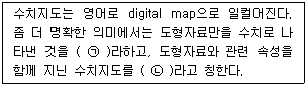
- ㉠ : 레전드, ㉡ : 레이어
- ㉠ : 레전드, ㉡ : 커버리지
- ㉠ : 커버리지, ㉡ : 레이어
- ㉠ : 레이어, ㉡ : 커버리지
(정답률: 60%)
53. 공간 데이터에서 나타나는 오차의 발생원으로 볼 수 없는 것은?
- 원시자료 이용 시 나타나는 오차
- 데이터 모델의 표현 시 발생하는 오차
- 데이터 처리과정과 공간 분석 시에 발생하는 오차
- 수치데이터를 생성 및 편집하는 단계에서 발생하는 오차
(정답률: 33%)
54. 지적관련 전산화 사업의 시기가 빠른 순으로 올바르게 나열한 것은?
- 토지⋅임야대장 전산화 → 지적도면전산화 → KLIS구축 → 부동산종합공부시스템구축
- 지적도면전산화 → 토지⋅임야대장 전산화 → KLIS구축 → 부동산종합공부시스템구축
- 지적도면전산화 → 토지⋅임야대장 전산화 → 부동산종합공부시스템구축 → KLIS구축
- 토지⋅임야대장 전산화 → KLIS구축 → 지적도면전산화 → 부동산종합공부시스템구축
(정답률: 59%)
55. 다음 중 지적 행정에 웹 LIS를 도입한 효과로 가장 거리가 먼 것은?
- 중복된 업무를 처리하지 않을 수 있다.
- 지적 관련 정보와 자원을 공유할 수 있다.
- 업무의 중앙 집중 및 업무별 중앙 제아가 가능하다.
- 시간과 거리에 제한을 받지 않고 민원을 처리할 수 있다.
(정답률: 73%)
56. 데이터 분석에 대한 설명이 옳은 것은?
- 재부호화란 속성값의 숫자나 명칭을 변경하는 작업이다.
- 네트워크 불석은 어떤 객체 둘레에 특정한 폭을 가진 구역을 구축하는 것이다.
- 질의검색이란 취득한 자료를 대상으로 최댓값, 표준편차, 분산 등의 분석과 상관관계 조사 등을 실시할 수 있다.
- 근접분석은 하나의 레이어 또는 커버리지 위에 다른 레이어를 올려놓고 두 레이어에 나타난 형상들 간의 관계를 분석하는 것이다.
(정답률: 43%)
57. 벡터데이터의 위상구조를 이용하여 분석이 가능한 내용이 아닌 것은?
- 분리성
- 연결성
- 인접성
- 포함성
(정답률: 66%)
58. 다음 토지정보시스템의 공간데이터 취득방법 중 성격이 다른 하나는?
- GPS에 의한 방법
- COGO에 의한 방법
- 스캐너에 의한 방법
- 토탈스테이션에 의한 방법
(정답률: 62%)
59. 다음 용어의 설명 중 잘못된 것은?
- “국가공간정보체계“란 관리기관이 구축 및 관리하는 공간정보체계를 말한다.
- ”공간정보데이터베이스“란 공간정보를 체계적으로 정리하여 사용자가 검색하고 활용할 수 있도록 가공한 정보의 집합체를 말한다.
- ”국가공간정보 통합체계“란 기본공간정보 데이터베이스를 기반으로 국가공간정보체계를 통합 또는 연계하여 행정안전부 장관이 구축 운용하는 공간정보체계를 말한다.
- ”공간정보체계“란 공간정보를 효과적으로 수집⋅저장⋅가공⋅분석⋅표현할 수 있도록 서로 유기적으로 연계된 컴퓨터의 하드웨어⋅소프트웨어⋅데이터베이스 및 인적자원의 결합체를 말한다.
(정답률: 70%)
60. 국가공간정보 기본법에서는 다음과 같이 공간정보를 정의하고 있다. ㉠, ㉡, ㉢에 들어갈 용어가 모두 올바르게 나열된 것은?
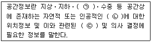
- ㉠ : 공중, ㉡ : 개체, ㉢ : 지형정보
- ㉠ : 지표, ㉡ : 객체, ㉢ : 도형정보
- ㉠ : 지표, ㉡ : 개체, ㉢ : 속성정보
- ㉠ : 수상, ㉡ : 객체, ㉢ : 공간적 인지
(정답률: 52%)
4과목: 지적학
61. 지주총대의 사무에 해당되지 않는 것은?
- 신고서류 취급 처리
- 소유자 및 경계 사정
- 동리의 경계 및 일필지조사의 안내
- 경계표에 기재된 성명 및 지목 등의 조사
(정답률: 61%)
62. 토지조사사업 당시 토지의 사정에 대하여 불복이 있는 경우 이의 재결기관은?
- 도지사
- 임시토지조사국장
- 고등토지조사위원회
- 지방토지조사위원회
(정답률: 72%)
63. 다음 중 근대지적의 시초로 과세지적이 대표적인 나라는?
- 일본
- 독일
- 프랑스
- 네덜란드
(정답률: 71%)
64. 대한제국 정부에서 문란한 토지제도를 바로잡기 위하여 시행하였던 근대적 공시제도의 과도기적 제도는?
- 등기제도
- 양안제도
- 입안제도
- 지권제도
(정답률: 51%)
65. 양안 작성 시 실제로 현장에 나가 측량하여 기록하는 것은?
- 야초책
- 정서책
- 정초책
- 중소책
(정답률: 64%)
66. 우리나라에서 지적공부에 토지표시, 사항을 결정 등록하기 위하여 택하고 있는 심사방법은?
- 공중심사
- 대질심사
- 실질심사
- 형식심사
(정답률: 66%)
67. 다음 중 고조선시대의 토지제도로 옳은 것은?
- 과전법(科田法)
- 두락제(斗落制)
- 정전제(井田制
- 수등이척제(隨等異尺制)
(정답률: 53%)
68. 우리나라의 지적제도와 등기제도에 대한 설명이 옳지 않은 것은?
- 지적과 등기 모두 형식주의를 기본이념으로 한다.
- 지적과 등기 모두 실질적 심사주의를 원칙으로 한다.
- 지적은 공신력을 인정하고, 등기는 공신력을 인정하지 않는다.
- 지적은 토지에 대한 사실관계를 공시하고 등기는 토지에 대한 권리관계를 공시한다.
(정답률: 54%)
69. 토지멸시에 의한 등록말소에 속하는 것은?
- 등록전환에 의한 말소
- 등록변경에 따른 말소
- 토지합병에 따른 말소
- 바다로 된 토지의 말소
(정답률: 78%)
70. 지적국정주의에 대한 내용으로 옳지 않은 것은?
- 토지의 표시사항을 국가가 결정한다.
- 토지소유권의 변동은 등기를 해야 효력이 발생한다.
- 토지의 표시방법에 대하여 통일성, 획일성, 일관성을 유지하기 위함이다.
- 소유자의 신청이 없을 경우 국가가 직권으로 이를 조사 또는 측량하여 결정한다.
(정답률: 54%)
71. 우리나라에서 지적이라는 용어가 법률상 처음 등장한 것은?
- 1895년 내부관제
- 1898년 양지아문 직원급 처무규정
- 1901년 지계아문 직원급 처무규정
- 1910년 토지조사법
(정답률: 76%)
72. 지적행정을 재무부와 사세청의 지도⋅감독 하에 세무서에서 담당한 연도로 옳은 것은?
- 1949년 12월 31일
- 1960년 12월 31일
- 1961년 12월 31일
- 1975년 12월 31일
(정답률: 49%)
73. 경계불가분의 원칙에 관한 설명으로 옳은 것은?
- 3개의 단위 토지 간을 구획하는 선이다.
- 토지의 경계에는 위치, 길이, 넓이가 있다.
- 같은 토지에 2개 이상의 경계가 있을 수 있다.
- 토지의 경계는 인접 토지에 공통으로 작용한다.
(정답률: 71%)
74. 다음 중 토지조사사업의 일필지 조사 내용에 해당하지 않는 것은?
- 임차인 조사
- 지목의 조사
- 경계 및 지역의 조사
- 증명 및 등기필토지의 조사
(정답률: 69%)
75. 양전개정론을 주장한 학자와 그 저서의 연결이 옳은 것은?
- 김정호 - 속대전
- 이기 - 해학유서
- 정약용 - 경국대전
- 서유구 – 목민심서
(정답률: 77%)
76. 형식적심사에 의하여 개설하는 토지등기부의 보전 등기를 위하여 일반적으로 권원증명이 되는 서류는?
- 공인인증서
- 인감증명서
- 인우보증서
- 토지대장등본
(정답률: 78%)
77. 토지조사사업 당시 토지의 사정이 의미하는 것은?
- 경계와 면적으로 확정하는 것이다.
- 지번, 지목, 면적으로 확정하는 것이다.
- 소유자와 지목을 확정하는 행정행위이다.
- 소유자와 강계를 확정하는 행정처분이다.
(정답률: 73%)
78. 다음 중 지적재조사의 효과로 볼 수 없는 것은?
- 지적과 등기의 책임부서 명백화
- 국토개발과 토지이용의 정확한 자료제공
- 행정구역의 합리적 조정을 위한 기초자료
- 토지소유권의 공시에 대한 국민의 신뢰확보
(정답률: 61%)
79. 토지조사사업에서 측량에 관계되는 사항을 구분한 7가지 항목에 해당하지 않는 것은?
- 삼각측량
- 지형측량
- 천문측량
- 이동지측량
(정답률: 74%)
80. 우리나라 토지대장과 같이 토지를 지번 순서에 따라 등록하고 분할되더라도 본번과 관련하여 편철하고 소유자의 변동이 있을 때에 이를 계속 수정하여 관리하는 토지등록부 편성 방법은?
- 물적편성주의
- 인적평성주의
- 연대적 편성주의
- 인적⋅물적편성주의
(정답률: 53%)
5과목: 지적관계법규
81. 지적재조사에 관한 특별법상 남부고지된 조정금에 이의가 있는 토지소유자는 납부고지를 받은 날부터 며칠 이내에 지적소관청에 이의신청을 할 수 있는가?
- 7일
- 15일
- 30일
- 60일
(정답률: 40%)
82. 지적소관청이 토지이동현황 조사계획을 수립하는 단위는?
- 도 단위
- 시 단위
- 시⋅도 단위
- 시⋅군⋅구 단위
(정답률: 69%)
83. 다음 중 지적소관청이 관할 등기관서에 등기를 촉탁하여야 하는 경우가 아닌 것은?
- 토지의 신규등록을 하는 경우
- 토지가 지형의 변화 등으로 바다로 된 경우
- 지번을 변경할 필요가 있다고 인정되는 경우
- 하나의 지번부여지역에 서로 다른 축척의 지적도가 있는 경우
(정답률: 62%)
84. 공간정보의 구축 및 관리 등에 관한 법률에서 정의한 용어의 설명으로 옳지 않은 것은?
- “필지”란 대통령령으로 정하는 바에 따라 구획되는 토지의 등록단위를 말한다.
- “경계”란 필지별로 경계점들을 직선으로 연결하여 지적공부에 등록한 선을 말한다.
- “토지의 표시”란 지적공부에 토지의 소재⋅지번(地番)⋅지목(地目)⋅면적⋅경계 또는 좌표를 등록한 것을 말한다.
- “측량기준점”이란 지적삼각점, 지적삼각보조점, 지적수준점을 말한다.
(정답률: 73%)
85. 공간정보의 구축 및 관리 등에 관한 법령상 지목이 다른 하나는?
- 골프장
- 수영장
- 스키장
- 승마장
(정답률: 54%)
86. 공간정보의 구축 및 관리 등에 관한 법률상 축척변경에 대한 설명으로 옳지 않은 것은?
- 작은 축척을 큰 축척으로 변경하는 것을 말한다.
- 임야도의 축척을 지적도의 축척으로 바꾸는 것을 말한다.
- 축척변경은 지적도에 등록된 경계점의 정밀도를 높이기 위해 시행한다.
- 축척변경에 관한 사항을 심의⋅의결하기 위하여 지적소관청에 축척변경위원회를 둔다.
(정답률: 66%)
87. 지적삼각점성과표에 기록⋅관리하여야 하는 시항 중 필요한 경우로 한정하여 기록⋅관리하는 사항은?
- 자오선수차
- 경도 및 위도
- 시준점의 명칭
- 좌표 및 표고
(정답률: 59%)
88. 공간정보의 구축 및 관리 등에 관한 법령상 지목 설정이 올바르게 연결 된 것은?
- 체육용지 – 실내체육관, 승마장
- 유원지 – 스키장, 어린이 놀이터
- 잡종지 – 원상회복을 조건으로 돌을 캐내는 곳
- 염전 – 동력을 이용하여 소금을 제조하는 공장시설물의 부지
(정답률: 51%)
89. 부동산등기법에 따라 미등기의 토지에 관한 소유권보존등기를 신청할 수 없는 자는?
- 토지대장에 최초의 소유자로 등록되어 있는 자
- 확정판결에 의하여 자기의 소유권을 증명하는 자
- 수용으로 인하여 소유권을 취득하였음을 증명하는 자
- 토지에 대하여 지적소관청의 확인에 의하여 자기의 소유권을 증명하는자
(정답률: 58%)
90. 지적공부의 열람, 등본 발급 및 수수료에 대한 설명으로 옳지 않은 것은?
- 성능검사대행자가 하는 성능검사 수수료는 현금으로 내야 한다.
- 인터넷으로 지적도면을 발급할 경우 그 크기는 가로 21cm, 세로 30cm이다.
- 지적기술자격을 취득한 자가 지적공부를 열람하는 경우에는 수수료를 면제한다.
- 전산파일로 된 경우에는 당해 지적소관청이 아닌 다른 지적소관청에 신청할 수 있다.
(정답률: 72%)
91. 다음 중 도시⋅군관리계획의 입안권자가 아닌 자는?
- 군수
- 구청장
- 광역시장
- 특별시장
(정답률: 57%)
92. 토지의 이동이 있을 때 지적공부에 등록하는 지번⋅지목⋅면적⋅경계 또는 좌표를 결정하는 자는?
- 시⋅도지사
- 지적소관청
- 지적측량업자
- 행정안전부장관
(정답률: 80%)
93. 지적기준점성과의 관리 등에 대한 설명으로 옳은 것은?
- 지적도근점성과는 지적소관청이 관리한다.
- 지적삼각점성과는 지적소관청이 관리한다.
- 지적삼각보조점서오가는 시⋅도지사가 관리한다.
- 지적소관청이 지적삼각점을 변경하였을 때에는 그 측량성과를 국토교통부장관에게 통보한다.
(정답률: 59%)
94. 국토의 계획 및 이용에 관한 법률상 심의를 거치지 아니하고 한 차례만 2년 이내의 기간 동안 개발행위허가의 제한을 연장할 수 있는 지역이 아닌 곳은?
- 기반시설부담구역으로 지정된 지역
- 지구단위계획구역으로 지정된 지역
- 개발행위로 인하여 주변의 환경⋅경관⋅미관⋅문화재 등이 크게 오염되거나 손상될 우려가 있는 지역
- 도시⋅군관리계획을 수립하고 있는 지역으로서 그 도시⋅군관리계획이 결정될 경우 용도지역의 변경이 예상되고 그에 따라 개발행위허가의 기준이 크게 달라질 것으로 예상되는 지역
(정답률: 44%)
95. 지적소관청을 직접방문하여 1필지를 기준으로 토지대장 또는 임야대장에 대한열람신청을 하거나 등본발급신청을 할 경우 납부해야 하는 수수료는?
- 열람 : 200원, 등본발급 : 300원
- 열람 : 300원, 등본발급 : 500원
- 열람 : 500원, 등본발급 : 700원
- 열람 : 700원, 등본발급 : 1000원
(정답률: 69%)
96. 지적측량업의 등록에 필요한 기술능력의 등급별 인원 기준으로 옳은 것은? (단, 상위 등급의 기술능력으로 하위 등급의 기술능력을 대체하는 경우는 고려하지 않는다.)
- 고급기술인 1명 이상
- 중급기술인 1명 이상
- 초급기술인 1명 이상
- 지적분야의 초급기능사 2명 이상
(정답률: 60%)
97. 공간정보의 구축 및 관리 등에 관한 법률상 2년 이하의 징역 또는 2천만원 이하의 벌금에 처하는 자로 옳지 않은 것은?
- 측량성과를 국외로 반출한 자
- 고의로 측량성과 또는 수로조사성과를 사실과 다르게 한 자
- 측량기준점표지를 이전 또는 파손하거나 그 효용을 해치는 행위를 한 자
- 측량업자로서 속임수, 위력(威力), 그 밖의 방법으로 측량업과 관련된 입찰의 공정성을 해친 자
(정답률: 63%)
98. 새로운 권리에 관한 등기를 마쳤을 때, 작성한 등기필정보를 등기권리자에게 통지하지 아니하는 경우로 옳지 않은 것은?
- 등기권리자를 대위하여 등기신청을 한 경우
- 국가 또는 지방자치단체가 등기권리자인 경우
- 등기권리자가 등기필정보의 통지를 원하지 아니하는 경우
- 등기필정보통지서를 수령할 자가 등기를 마친 때부터 1개월 이내에 그 서면을 수령하지 않은 경우
(정답률: 44%)
99. 지적삼각점의 지적측량성과와 검사 성과와의 연결교차 허용범위로 옳은 것은? (단, 그 지적측량성과에 관하여 다른 입증을 할 수 있는 경우는 제외한다.)
- 0.10m 이내
- 0.15m 이내
- 0.20m 이내
- 0.25m 이내
(정답률: 55%)
100. 다음 중 지적소관청이 지적공부의 등록사항에 잘못이 있는지를 직권으로 조사⋅측량하여 정정할 수 있는 경우에 해당하지 않는 것은?
- 미등기 토지의 소유자를 변경하는 경우
- 지적공부의 작성 또는 재작성 당시 잘못 정리된 경우
- 토지이동정리 결의서의 내용과 다르게 정리된 경우
- 지적도 및 임야도에 등록된 필지가 면적의 증감 없이 경계의 위치만 잘못된 경우
(정답률: 60%)